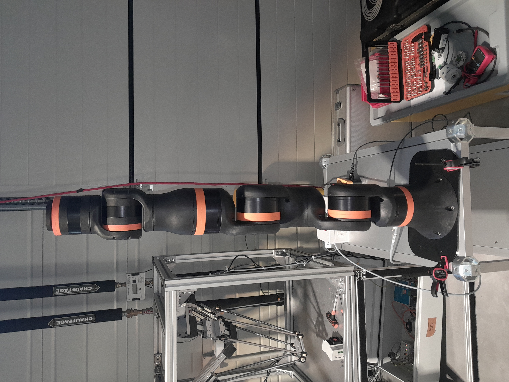

Stage Ingénieur : Robotique & Maintenance Industrielle
Au cours de mon stage de 10 semaines chez igus France, j'ai intégré le département Low-Cost Automation. Ma mission principale portait sur l'amélioration de la maintenance et des performances des systèmes robotiques, notamment sur le cobot 6 axes ReBeL.

1. Robotique et Automatisation Low-Cost
J'ai travaillé sur la standardisation des procédures de maintenance pour les robots collaboratifs. Cela impliquait une compréhension profonde de la cinématique et des logiciels de contrôle.
Réalisation d'un boîtier de commande automatisé pour les tests d'endurance des câbles Chainflex. J'ai géré l'étude du câblage et la configuration technique pour simuler des cycles de flexion intensifs.
Conception et mise en service de supports de démonstration pour les salons et présentations clients. Cette mission incluait le montage matériel, le câblage électrique et la programmation de trajectoires fluides sur le cobot ReBeL et les solutions LCA via le logiciel iRC.
2. Développement d'une Control Box (Banc de Test)
Pour répondre à un besoin interne de fiabilité, j'ai participé à la conception d'une Control Box dédiée aux tests d'endurance des câbles Chainflex et des chaînes porte-câbles.
- Conception Électrique : Étude du schéma de câblage pour automatiser les cycles de mouvement.
- Tests de Performance : Analyse de la tenue des polymères et des câbles sous contraintes de torsion et de flexion répétées.

3. Documentation et Support Technique
Une part importante de mon travail a consisté à rendre la technologie accessible via la création de supports techniques précis.
Rédaction de manuels d'utilisation et de guides de dépannage illustrés pour les techniciens de maintenance.
Utilisation quotidienne de l'anglais technique pour la documentation et les échanges sur les standards du groupe igus GmbH.
Conclusion
Ce stage chez igus France m'a permis d'appliquer mes connaissances en GEII dans un environnement industriel de pointe. J'y ai développé une vision pragmatique de la robotique : l'innovation n'est efficace que si elle est maintenable et fiable sur le long terme.